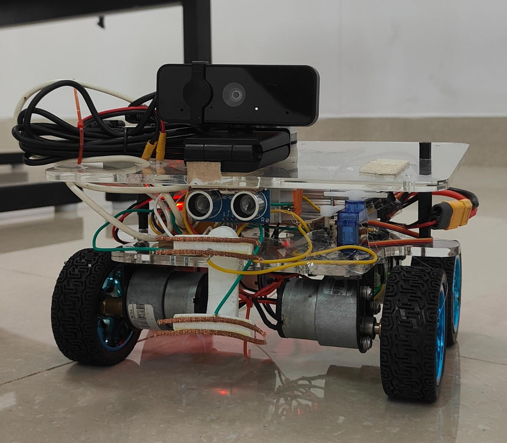
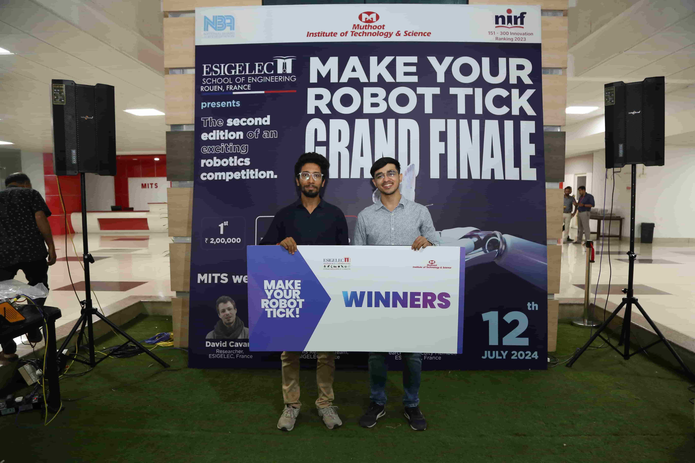

Self-Driving Robot for Power Gathering
An autonomous robot that finds and harvests energy on its own. I built a custom AI image detection model on Jetson Orin, paired it with a supercapacitor-based power system, and led the team to first place at the MYRT International Robotics Competition. Read below to know what went wrong and how we still cooked!

Competition robot

Us bagging the first prize!
The Problem
The MYRT International Robotics Competition asked teams to build a robot that could autonomously navigate an arena, identify energy sources, and harvest power, all without any human input. It's a full-systems challenge: perception, planning, actuation, and power management all had to work together under real-world conditions.
How I Built It
The brains of the robot was an NVIDIA Jetson Orin running a custom-trained AI image detection model. I built and fine-tuned the model to identify energy stations in the competition arena, then integrated it with a real-time navigation stack for obstacle avoidance and route planning. But on the day, it did not work as expected as the detection poles were much different then the training pictures, on top of that the lighting was making it harder.
What we did next was crazy, we ditched the Jetson, the main brain and replaced it with the low computing Arduino! I knew this could happen, so I had a PID based motor movement for the bot, as the motors were just normal 100-150 geared rpm motors. We coded the bot to move on the path, timed it well and just prayed for it to work. We updated the path every round and it worked!
The power system was the part I'm proudest of. Instead of conventional batteries, I designed a supercapacitor-based energy harvesting and storage system that could charge rapidly from the arena's energy stations and provide stable power for the Jetson and motors. Balancing fast-charge cycles with steady output required careful power electronics design.
I also secured $1,150 in funding to cover development costs and led the team through design reviews, build sprints, and competition prep.
Tech Stack
Demo Video

Results
- 1st Prize ($2,400) at the MYRT International Robotics Competition
- $1,150 in funding secured for development
- Custom AI detection + supercapacitor power — end-to-end system design
What I Took Away
Winning was great, but the real lesson was in managing the integration. A robot this complex doesn't fail in one subsystem, it fails at the seams between them. Getting perception, power, and actuation to play nicely under competition pressure taught me more about systems engineering than any textbook.